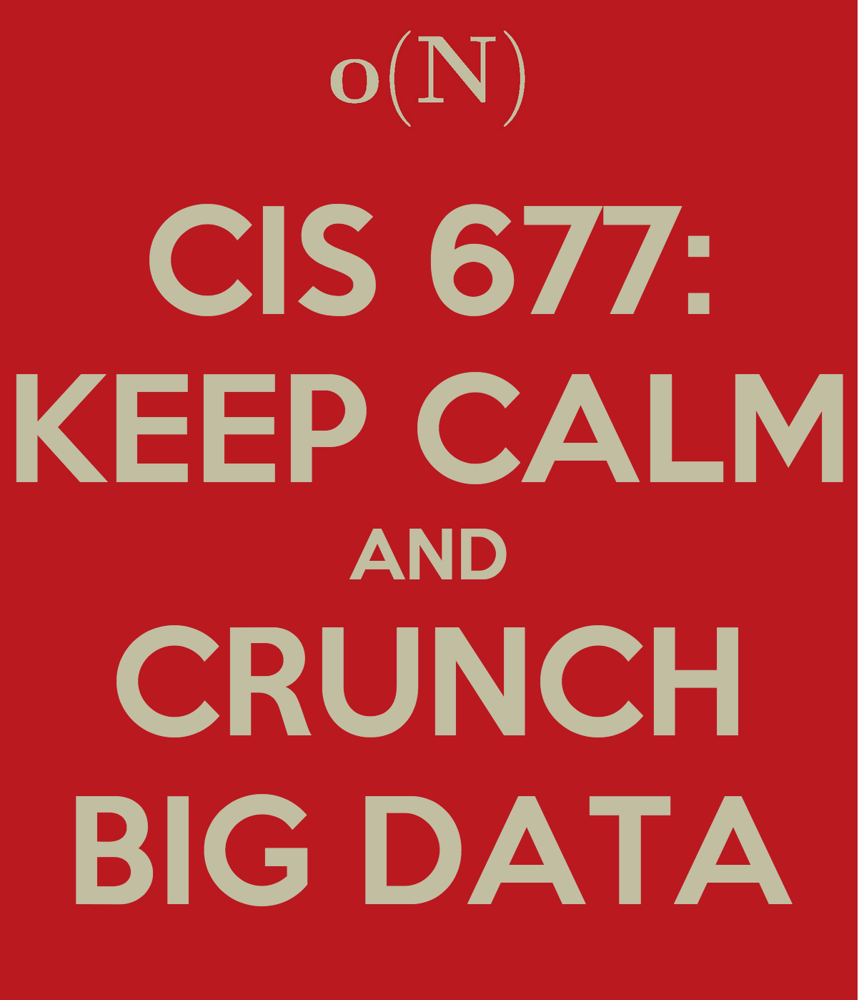
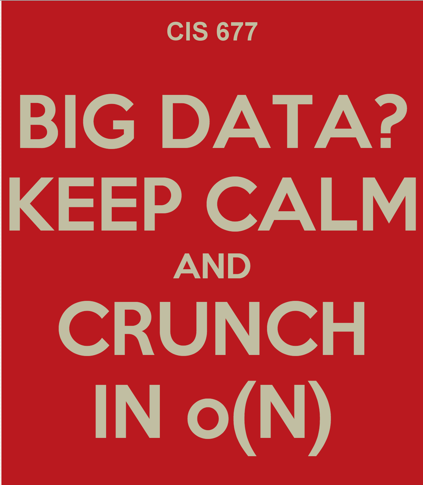

Sketch*
Increasingly large datasets are being collected by governments, private companies and research institutions. This motivates increased interest in the design and analysis of algorithms for rigorous analysis of such data. In this class we will consider algorithms for scenarios when the size of the data is too large to fit into the main memory of a single machine. Two main paradigms of computation that we will focus on are massively parallel computation (applicable to frameworks such as Yahoo!'s Hadoop, Google's MapReduce and Microsoft's Dryad) and streaming algorithms (Apache Storm and Spark Streaming).
This class covers a rapidly evolving area. There is no textbook. Related classes at other universities:
* Usually there is an abstract here.
Plan
This class will cover the following topics:
-
Part 1: Streaming Algorithms
 Data streams represent a large dataset as a sequence updates to its entries.
Streaming algorithms extract only a small amount of information about the data stream (a "sketch") and compute an answer based on that.
Such algorithms are typically allowed to make only one pass over the data (or very few passes).
The typical goal of algorithm design is to minimize the number of passes and space, while achieving a good approximation guarantee.
Data streams represent a large dataset as a sequence updates to its entries.
Streaming algorithms extract only a small amount of information about the data stream (a "sketch") and compute an answer based on that.
Such algorithms are typically allowed to make only one pass over the data (or very few passes).
The typical goal of algorithm design is to minimize the number of passes and space, while achieving a good approximation guarantee.
Tentative outline:
- Lecture 1.
Introduction. Probablity basics. Approximate counting, Morris's algorithm.
- Lecture 2.
Approximating the median. AMS-sketching. Frequency moments via AMS. F2-moment via 4-wise independent hashing. Distinct elements.
- Lecture 3.
Count-Min sketch, heavy hitters. Count-Sketch. L2-sampling. L0-sampling. L1 sparse recovery.
- Lecture 4.
Graph sketching: Connectivity, Bipartiteness, Minimum spanning tree.
-
Part 2: Algorithms for Numerical Linear Algebra and High-Dimensional Data

Tentative outline:
- Lecture 5.
Dimension reduction, Johnson-Lindenstrauss transform. Nearest neighbor search, locality-sensitive hashing.
- Lecture 6.
Subspace embeddings. Approximate matrix multiplication, leverage scores, L2-squared regression.
- Lecture 7.
L1-regression, low rank approximation
-
Part 3: Massively Parallel Algorithms
 In massively parallel computational systems (clusters) the data is partitioned between a large number of identical machines connected via a high-speed network.
An algorithm proceeds in synchronous rounds, each consisting of local computation performed by each machine followed by an exchange of information through the network.
The typical goal of algorithm design is to minimize the number of synchronous rounds, together with optimizing the time/space, communication, etc.
In massively parallel computational systems (clusters) the data is partitioned between a large number of identical machines connected via a high-speed network.
An algorithm proceeds in synchronous rounds, each consisting of local computation performed by each machine followed by an exchange of information through the network.
The typical goal of algorithm design is to minimize the number of synchronous rounds, together with optimizing the time/space, communication, etc.
Tentative outline:
- Lecture 8.
Model for massively parallel computation. Frequency moments, connectivity, minimum spanning tree.
- Lecture 9.
Algorithms for dense graphs via filtering. K-means||. Euclidean Minimum Spanning Tree.
- Lecture 10.
TBD.
-
Part 4: Sublinear Time Algorithms

Tentative outline:
- Lecture 11.
Sublinear time approximation and property testing. Testing images, sortedness, connectedness.
- Lecture 12.
Approximating weight of the Minimum Spanning Tree. Lp-Testing.
- Lecture 13.
TBD.
Homework
Homework problems will appear here.
Bibliography
-
Noga Alon, Yossi Matias, Mario Szegedy: The Space Complexity of Approximating the Frequency Moments. J. Comput. Syst. Sci. 58(1): 137-147 (1999)
- Broder, Andrei Z. (1997), "On the resemblance and containment of documents", Compression and Complexity of Sequences: Proceedings, Positano, Amalfitan Coast, Salerno, Italy, June 11-13, 1997, IEEE, pp. 21–29
- Johnson, William B.; Lindenstrauss, Joram (1984), "Extensions of Lipschitz mappings into a Hilbert space", Conference in Modern Analysis and Probability (New Haven, Conn., 1982), Contemporary Mathematics 26, Providence, RI: American Mathematical Society, pp. 189–206
- Funda Ergün, Sampath Kannan, Ravi Kumar, Ronitt Rubinfeld, Mahesh Viswanathan, Spot-Checkers. Journal of Computer System and Sciences 2000, STOC 1998.
- Oded Goldreich, Dana Ron, Property testing in bounded degree graphs. Algorithmica 2002, STOC 1997.
- Bernard Chazelle, Ronitt Rubinfeld, Luca Trevisan, Approximating the Minimum Spanning Tree Weight in Sublinear Time. SIAM Journal of Computing 2005, ICALP 2001.
- Noga Alon, Eldar Fischer, Michael Krivelevich, Mario Szegedy, Efficient testing of large graphs, Combinatorica 20 (2000), 451-476.
- Oded Goldreich, Dan Ron, Approximating average parameters of graphs, Random Struct. Algorithms 32(4): 473-493 (2008)
- Piotr Berman, Sofya Raskhodnikova, and Grigory Yaroslavtsev, Testing properties with respect to Lp distances, STOC 2014.
- Alexandr Andoni, Aleksandar Nikolov, Krzysztof Onak, Grigory Yaroslavtsev, Parallel algorithms for geometric graph problems. STOC 2014.
- Graham Cormode, S. Muthukrishnan: An Improved Data Stream Summary: The Count-Min Sketch and Its Applications. LATIN 2004: 29-38
Poster Challenge
Unleash your creativity and show us your love for big data and sublinear algorithms!
Guidelines for the poster design challenge:
- Deadline: TBA.
- Please, use this poster generator with one of these two official Penn background colors: #01256e or #bf191f.
- It is important that you keep the "keep calm" part. Those who successfully complete the class will receive a limited edition of the "I kept calm and ..." T-shirt.
- Send your poster in PNG to grigory (at) grigory (dot) us.
- See examples below.
|  |
 |
 |
|
|
|
 CIS 677: algorithms for Big Data
CIS 677: algorithms for Big Data